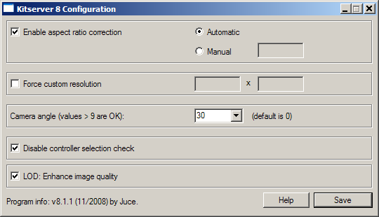

Kitserver 8 Manual
November 10, 2008 - Kitserver 8.1.1
The most up-to-date version of this documentation, and the translations to many languages, are located here: http://kitserver.ath.cx/docs/
1. Introduction
Kitserver 8 is an add-on program for Pro Evolution Soccer 2009 (and Pro Evolution Soccer 2009 DEMO). It is a loader and manager for various modules.
Below is a quick summary of the available features. Follow the link in the left column to get more details about a particular module.
| Kserv 8.1.1 |
kserv.dll |
Organize your kits into GDB, and assign each team its own kits. |
|---|
| AFS2FS 8.1.1 |
afs2fs.dll |
Manage AFS (.img) game content using files and folders: much easier and quicker to install/remove patches, without the need modify *.img files |
|---|
| LOD Mixer 8.1.1 |
lodmixer.dll |
Select any quality settings (Low,Medium,High); various tweaks to graphics and game options:
Any window resolution supported, hidden fullscreen resolutions unlocked;
Manual/Automatic aspect ratio correction. LOD adjustment is available too.
|
|---|
| Camera module 8.1.1 |
camera.dll |
Increase the camera viewing angle for Normal and Wide cameras, and enjoy new playing experience. |
|---|
| Time module 8.1.1 |
time.dll |
Change match time for Exhibition and Cup/League/ML/CL games. |
|---|
2. Installation / Removal
As with previous version of Kitserver, you have to unpack the archive to your PES installation folder. It should look like this:

Then go to kitserver folder and run the setup.exe.
What is new is that you can now also select your
settings.exe. This is necessary because some changes are only possible in that
file. simply select these both files (they should already be preselected) and
click "Install". If you choose that you don't want to use Kitserver any longer,
run setup.exe again and click "Remove". You can also install/remove Kitserver
only for one exe by setting the other one to "no action".

2.1. Advanced usage of setup.exe
The kitserver setup.exe program can also be run without GUI - in a so-called batch or command-line mode. This can be useful, if kitserver is part of a bigger patch, which contains an installer, and typically the last step of the installer is to attach kitserver to the game EXE file. This can be accomplished by running the setup like this:
setup --install --gfile={game-exe} --sfile={settings-exe}
setup --remove --gfile={game-exe} --sfile={settings-exe}
Example:
setup --install --gfile=..\pes2009.exe --sfile=..\settings.exe
3. Usage and configuration
3.1. Running settings.exe
After installing Kitserver, if you run settings.exe from your game main folder, you are asked if you want to enable all quality
levels. In PES2009, Konami doesn't allow you to choose a high quality level if
the game thinks your PC isn't good enough for that. If you click on "Yes", that
check is removed and you can try if they are right with their assumption.
3.2. Main configuration file: config.txt
In the kitserver folder, there is the program's main configuration file - config.txt. This is where you would need to make changes to enable/disable individual modules (DLLs), and/or configure module settings.
Here's how my config.txt looks like:
[afs2fs]
debug = 1
img.dir = "c:\juce\pes2009\"
[camera]
angle = 30
[kload]
dll = zlib1.dll
dll = libpng13.dll
dll = afsio.dll
dll = kserv.dll
dll = afs2fs.dll
dll = camera.dll
dll = lodmixer.dll
dll = time.dll
[lodmixer]
aspect-ratio.correction.enabled = 1
lod.check1 = 0
Each module can have its own configuration section, which starts with [module-name], and typically has one or more options following it. Now, normally you wouldn't need to modify config.txt file, except for the cases, when you need to modify the behaviour of a particular module (DLL), or enable/disable such DLL.
To disable a particular module - just comment out the corresponding line in the [kload] section by putting a '#' symbol at the beginning. (Or you can delete that line altogether.)
The order of the DLLs is important. In particular: zlib1.dll, libpng13.dll, afsio.dll must be loaded in that order before kserv.dll; afs2fs.dll after kserv.dll. Only in very rare situations you should try re-arranging the DLLs.
3.3. Configuration tool - config.exe
Formerly known as lodcfg.exe (it used to be the GUI tool for LOD mixer only, but now it covers other configuration options as well), this simple GUI program allows to modify some configuration settings in config.txt. It's a helper tool and all that it does, you can also do manually, by editing config.txt in your favourite text editor. In fact, some things you can only do manually - like adding and removing modules (DLLs). But for simple things - like changing resolution, or choosing camera angle - it's faster and easier to just launch config.exe, quickly adjust things, then click [Save] button, and you're done.

3.4. GDB location
GDB is a collection of different types of game data. In the current release, those include: kits, faces and hair files. In the future, there will also be stadiums and possibly boots. The GDB is essentially a simple hierarchy of folders: the root folder itself MUST be named GDB, inside it there is a folder for kits: uni, (and in the future releases, folders for faces and hair: faces, stadiums, balls, etc.).
By default the GDB folder itself is located inside kitserver folder, but you can put it anywhere on your hard disk. To do that, you would need to use "gdb.dir" setting in the [kload] section of the config.txt file, like this:
[kload]
gdb.dir = "c:\mypesfiles\"
...
Two important things to remember:
- You need to specify the folder that contains "GDB", not the "GDB" folder itself. In other words, if the full pathname is c:\mypesfiles\GDB", then the option must be: gdb.dir = "c:\mypesfiles\"
- The path MUST end with the backslash ("\") symbol, as in the example above.
Top
4. Kserv Module (kserv.dll)
Kserv module is responsible for serving kits from the GDB ("Game content DataBase") during the game. The main feature of it is that you are not limited to the slots that cv06.img has for the kits, and you can assign a kit to any team.
At the moment, it is not possible to have more than 2 kits, but in the future
releases, you'll be able have a long list of alternative uniforms.
Kserv was historically the first module implemented in the original Kitserver program, made for PES3. That's where the Kitserver name originated from. Later, as more functionality were introduced as new modules, to avoid confusion, we changed the name of the module that serves kits to kserv, while Kitserver name now refers to the entire program.
4.1 GDB organization
The GDB contains a folder named uni, which is responsible for storing
the team kits (uniforms). The single most important file inside uni is called map.txt.
This file tells kitserver where to find the kits for particular team. As you know, each team has a unique id - an integer number from 0 to 313, i think. (Currently kitserver only supports teams with ids 0 - 257). For every team in the GDB, you must specify in the map.txt where the kits for this team are. Here is an example:
# This config maps team number into folder name
# Format: <team-num>,"<folder name>"
# Example: 21,"Russia"
21,"National\Russia"
9, "National\Germany"
6, "National\England"
IMPORTANT: Double quotes are not required, but advised - just so that there is no ambiguity about folder name. IDs for the teams will depend on whether you have installed any patches, but for default option file, you can see the IDs here -
uni.txt file
Please note that the sample GDB (provided with kitserver) is just one possible way of organizing the teams and
folders. It uses "EPL" folder to group all english teams, "National" - to group all national
teams, and so for. You may find that you just prefer a flat list of folders - without these
extra groups. In that case, just modify the map.txt file accordingly, and create
the structure of folders that you prefer. That's the main advantage of having map.txt - the
flexibility of kit organization.
You can see from map.txt above that in order to find a kit for team #21, the kitserver needs to go to the
folder GDB\uni\National\Russia. This folder will contain all of the kits that are
available to team #21. Inside it, you must create an individual folder for each kit. Like this:
 For players, 1st kit must have a folder name pa, 2nd - pb. Extra kits can have
any folder names that start with letter "p". I found it useful to prefix all extra kits with
px-. For example, px-redwhite. For the goalkeepers, 1st kit must be in the folder
ga, 2nd - in the gb. Extra kits can have any folder names that start with letter "g".
For players, 1st kit must have a folder name pa, 2nd - pb. Extra kits can have
any folder names that start with letter "p". I found it useful to prefix all extra kits with
px-. For example, px-redwhite. For the goalkeepers, 1st kit must be in the folder
ga, 2nd - in the gb. Extra kits can have any folder names that start with letter "g".
IMPORTANT: Folder name acts as a kind of ID for kitserver, which puts the
additional restriction on all those folder names: they cannot contain spaces, and preferably
they should be relatively short, and in English,French or other language withing Latin1
(iso8859-1) character set. Typically, if you want to make sure kitserver can properly
find/read the folder, just use latin characters, digits, underscore, and the dash (minus sign).
Now let's move on inside one of the kit folders. Take pa, for example.
 See the table below for explanation of each file:
See the table below for explanation of each file:
Images must be in PNG format: 8-bit paletted or 4-bit paletted (those may be used with fonts/numbers). So the filename must have
a ".png" extension.
| Reserved file name | Meaning | Format |
|---|
| kit.png | Kit texture |
1024x512 8-bit paletted image in PNG format.
|
| font.png | Font texture: used for names on the back of the shirt |
256x64 8-bit or 4-bit paletted image in PNG format. |
| numbers-back.png | Numbers texture: used for (big) numbers on the back of the shirt |
512x256 8-bit or 4-bit paletted image in PNG format. |
| numbers-front.png | Numbers texture: used for smaller front numbers |
256x128 8-bit or 4-bit paletted image in PNG format. |
| numbers-shorts.png | Numbers texture: used for numbers on shorts |
256x128 8-bit or 4-bit paletted image in PNG format. |
| config.txt | Kit attribute configuration file (see next section for more details) |
text file (in UTF-8 encoding) |
IMPORTANT NOTE TO KITMAKERS:
BMP kits are no longer supported, please use PNG format instead.
4.2. config.txt
This is the attribute configuration file.
As before, it is just a plain text file - you can use Notepad or any other text editor to
view or modify it. For each folder, you should have a config.txt file in it.
Here's the summary table of all the supported attributes:
| Attribute name | Meaning | Format | Example |
|---|
| model |
identifier for 3D-model of the shirt |
decimal integer |
model = 37 |
| collar |
Collar-type (note that different models will have different interpratations of the collar value) |
1/2/3/4 |
collar = 1 |
| shirt.number.location |
Where on the front of the shirt the number should be placed. ("off" means the number
will not be displayed at all.) This only applies to national teams.
|
center|topright|off |
shirt.number.location = topright |
| shorts.number.location |
Where on the shorts the number should be placed. ("off" means the number
will not be displayed at all.)
|
left|right|off |
shorts.number.location = left |
| name.location |
Where on the shirt the name of the player should be placed. This is useful
for teams like Boca Juniors, who have player names printed at the bottom of the
shirt, although you need to use it with the correct model - some models support names
at the bottom, some - do not. ("off" means the name will not be displayed at all.) |
top|bottom|off |
name.location = top |
| logo.location |
Where on the shirt the sponsor logo should be placed. (This attribute
is probably not gonna be very useful with kitserver, since if the
team has the logo on the back of the shirt, it will probably be painted
as part of the kit texture itself, by kitmaker) |
top|bottom|off |
logo.location = off |
| name.shape |
Indicates whether the name should be curved or straight. The values
have the same meaning as in Edit Mode: type1 - straight, type2 - slightly curved,
type3 - curved, type4 - even more curved. |
type1|type2|type3|type4 |
name.shape = type1 |
main.color
( radar.color ) |
This attribute specifies the main color of the shirt. It is also used as the color of the players on radar screen. It also influences the kit that is selected by default. (The old name "radar.color" is also supported for backwards compatibility) |
color, written in hexadecimal format RRGGBB (red,green,blue) |
main.color = 0A5D88
radar.color = 0A5D88 |
| shorts.color |
This attribute specifies the color of the player/gk shorts. The color
of shorts is used by the game to determine correct color of the underpants
for those players who wear them, and have them set to match the shorts
color. |
color, written in hexadecimal format RRGGBB (red,green,blue) |
shorts.color = 0A5D88 |
| description |
Any notes about the kit. This text will be displayed on
kit selection screen. Useful when there are
several kits that look nearly identical,
but you want to know which one is currently selected. |
any text in double quotes |
description = "All white (Euro 2008)" |
By default, the usage of "description" attribute is enabled, but if you want, you can disable it. To do that, edit your config.txt file, and the following option to the [kserv] section:
[kserv]
use.description = 0
Top
5. AFS2FS Module (afs2fs.dll)
This module allows to organize your BIN-files into folders on disk, instead of inserting them into AFS(*.img) files, which is sometimes a pain, and may require a lot of extra disk space.
Several people over the last few years had suggested similar solutions, but ultimately it was Str@teG who kept talking about this idea of organizing BINs into folders, and eventually i decided to just go ahead and do it. So now this is realized in the this module - afs2fs.dll. From personal experience, i know that people are sometimes reluctant to install big patches that require an AFS-rebuild, not because it's particularly difficult or anything, but because it can be time-consuming and disk-space-hungry. With afs2fs, this is now very easy: you just put the BIN into correct folder and that's it. And, of course, there are no size constraints - the bins can be as large as needed!
5.1. How to set up the folders
In kitserver folder, there should be an img folder - if it's not there, create it, and then inside "img", create folders, as needed, named - cv00.img, cv01.img, cs0d.img, and so for. That's where you're going to be putting the BIN-files.
It's important to name the folders correctly: a folder must have exactly the same name as the corresponding AFS-file. For instance, if you call a folder cv00, instead of cv00.img, things will not work.)
This is how my img folder looks:

5.2. How to name the files
In general, you can name the files whichever way you want, but you must follow one rule: there must be a BIN number in the name, and it must be preceded by an underscore character ('_'). Also, the filenames CANNOT be longer than 63 characters.
Examples of correctly named files:
unknown_317.bin
gloves_5820.bin
ball_8.bin
unknow_8 (.bin extension is optional)
music_104.adx (a file can have a different extension: .adx is typically used for music and sound files)
Examples of incorrectly named files:
unnamed10.bin - no underscore symbol before the BIN number.
face.bin - no BIN number.
5.3. Placement of "img" folder
By default, the AFS2FS module expects to find the img folder inside the kitserver folder. However, it is also possible to configure the location of "img" folder to be anywhere on your hard disk. This makes it easier to both manage your game content - you can keep the "GDB" and "img" folders away from the game/kitserver folders, and also makes for an easier upgrade of kitserver.
To specify the location of img folder, use "img.dir" option in [afs2fs] section of the config.txt file. Like this:
[afs2fs]
img.dir = "c:\mypesfiles\"
Two important things to remember:
- You need to specify the folder that contains "img", not the "img" folder itself. In other words, if the full pathname is c:\mypesfiles\img", then the option must be: img.dir = "c:\mypesfiles\"
- The path MUST end with the backslash ("\") symbol, as in the example above.
5.4. Names for balls and songs
When replacing songs with AFS2FS, it is also possible to change the title of the song and the author name, by using a songs.txt map-file, which should be put into kitserver\names folder.
Here's an example of such songs.txt file:
# Song names map
# Format: , "", ""
# Note that double quotes are required.
# (possible binIds: 91-150)
104, "Vne zony dostupa", "Gorod 312"
Similarly with balls, it is often desirable to specify names which are longer than the original ones. One easy way to do that is to use a balls.txt map-file, which should be put into kitserver\names folder:
# Ball names map
# Format: , ""
# Note that double quotes are required.
# (Ball numbers go from 1 to 13)
7, "Nike Total 90 Omni White Yellow"
Top
6. LOD Mixer (lodmixer.dll)
LOD-Mixer is the module that allows to fine-tune some aspects of PES2008 graphics engine.
Currently the following features are implemented: screen resolution and aspect ratio correction. All of these can be configured manually in kitserver's main
configuration file (kitserver/config.txt), but you can also use Kitserver's configuration tool (config.exe).
6.1. Aspect Ratio.
Many LCD monitors are neither 4:3 nor 16:9. Often, a 16:10 ratio is
used, or even 16:9.6. This results in the picture being distored: players either
too fat or too skinny, and ball is not round. In this year version, Konami
decided to address that by introducing the black bars to compensate for the
case when aspect-ratio is different (LB checkbox). However, if you
don't like the black bars, then run settings.exe, turn off the LB checkbox, and then use Kitserver's aspect-ratio correction feature instead:
With LOD Mixer, you can set the aspect ratio to whatever you want. Either let
LOD Mixer calculate it automatically - at run-time, using the current screen
width and height in pixels - or set the value manually. Automatic way would work quite
accurately, assuming the pixel is square. Sometimes, however, you would want to
set it manually. For example, i play on widescreen monitor, but using a 800x600
resolution, because my video card is not powerful enough. The automatic
calculation would give 4:3, but since the view is stretched to fill the entire
screen, we need to account for that. Setting aspect ratio to 1.6 (which is a
natural AR for my laptop) does the trick.
6.2. Screen Resolution.
You can set any screen resolution you want, if you play in a Windowed mode. Even
crazy screens like 1567x532 will work, but you're likely to suffer from
performance problems on such cases.
Hidden fullscreen resolutions are fully unlocked now as well. However, only those
that your video card really supports in full-screen mode, will work. If you
accidently choose an unsupported fullscreen resolution, then PES should still
be able to start in a window.
6.3. Controller check
This feature may be useful to people who like to play a tournament - a league or
cup together. PES 2009 doesn't allow human players to control both teams, unless
both of their selected teams are playing against each other in the match. With
this new feature, you can remove that limitation. Now, even if it is for example,
P1 vs. COM game, or P2 vs. COM - you can freely select which team you control
with each controller. So, you can both play on the same team, or you can let
your friend control the opposition - to make things more interesting.
You can also now choose a "Spectator" mode for in tournaments.
6.4. LOD adjustment
This release contains a first implementation of LOD adjustment tools for PES2009.
For now, all you can do is basically check the checkbox that says: LOD: Enable image quality -
what it does is disables the lowest LOD level, where the game uses low-poly
models and low quality textures. This fixes the blurred faces problem, however
it may affect the frame-rate, depending on the power of your videocard. Give it
a try.
Top
7. Camera module (camera.dll)
For reasons known only to Konami product managers, for the second year running, they took away the interface feature that allowed to adjust camera angle (it was in PES3-PES6, but it disappeared starting with PES2008). The underlying logic is still present in the game executable though, and this module allows you to take advantage of it. You can adjust the camera angle: standard values are 0 - 9, but you can actually set a bigger value, which will result in camera turning even more. For example, i like to play with angle value set to 30.
Choose any value from 0 to 2^32-1. Angles like 50, 100, 200 give quite a different perspective of play. More fun :)
Use Kitserver configuration tool (config.exe) or, you can also edit
your config.txt file manually, like this:
[camera]
angle = 100
Top
8. Time expander (time.dll)
This tiny module allows to stretch the length of the match to normal 90 minutes, if you want, or even beyond that: making the seconds flow slower than normal. Also, another extreme is setting the match time to 1 minute. This is a whole new experience too: you have to really treasure the ball - keep posession, or you risk not getting it back at all, before the final whistle! Also, if you get a scoring chance, better put it away, because chances are it'll be the only one you get.
Set the time for an Exhibition Match using exhibition.time setting. For any other matches (Cup/League/Master League), use cup.time:
[time]
exhibition.time = 90
cup.time = 1
Credits
Programming: juce and Robbie
Beta-testing: members and guests of Evo-Web and PesWe.com forums.
Original idea for afs2fs modules: Str@teG
Many other ideas came from users of Evo-Web forums and PesWe.com forums
Special thanks go to: administrators of PesWe.com website and members of PesWe.com forums.